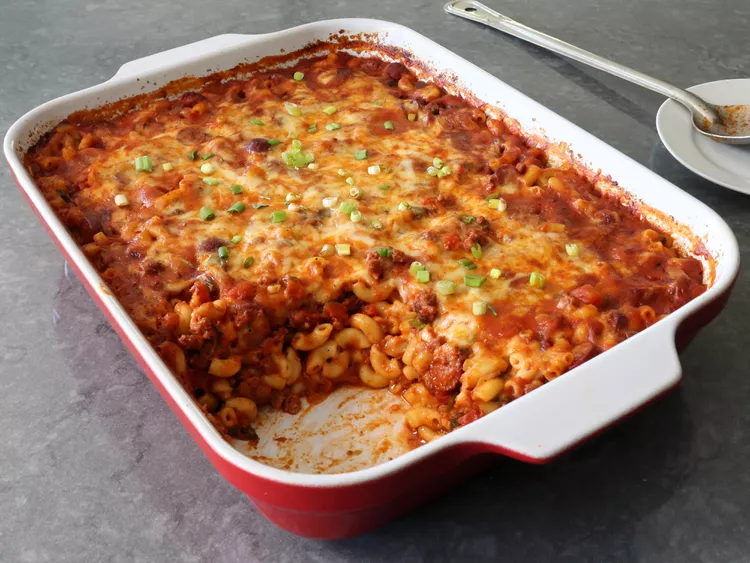

Lasagna Recipe

This chili dog mac and cheese combines two of my favorite things to eat—chili dogs and mac and cheese—and manages not to taste all that much like either one, while being wildly successful at being stupendously delicious.
Ingredients
- 1 tablespoon olive oil
- 1 pound ground beef
- 1 large onion, diced
Steps
- Add olive oil to a large pot and place over high heat. Add beef; cook and stir, breaking up with a spoon or spatula, about 2 minutes. Add onions and salt, and cook, stirring, until beef is crumbly, and onions turn translucent, about 5 minutes.
- Add the chili powder, cumin, paprika, black pepper, cinnamon, cayenne, dried oregano, and garlic. Cook, stirring, for about 2 minutes.
- Add peppers, sliced hot dogs, crushed tomatoes, and water. Stir together; bring the mixture to a simmer. Reduce heat to medium-low and simmer, stirring occasionally, until cooked to your taste, at least 30 minutes. Taste and adjust seasoning.